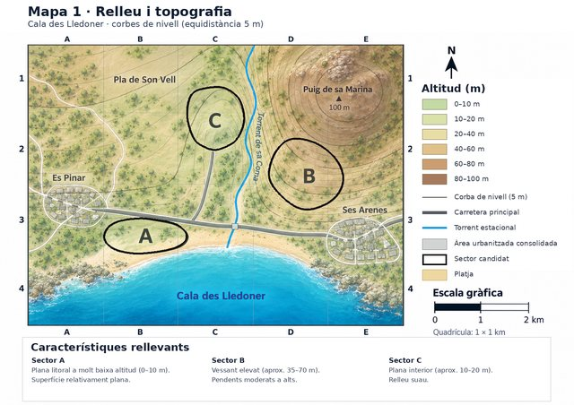
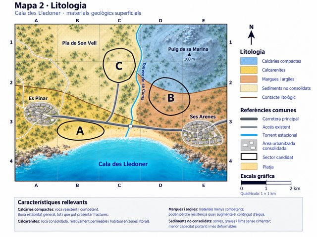
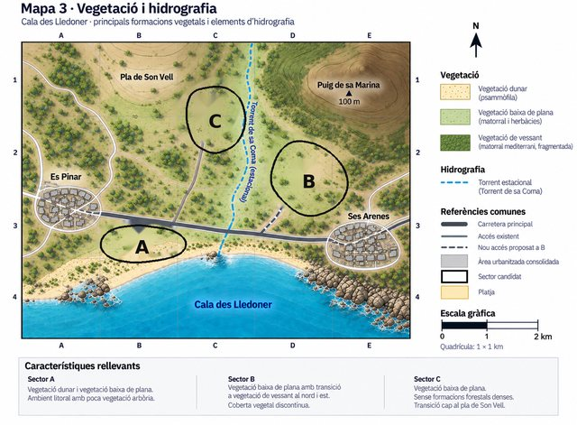
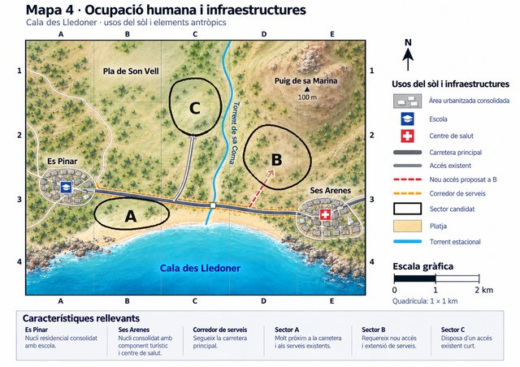

G2 · On construiríem? — Sessió 18¶
Biologia i Geologia · 4t d’ESO
Evidència G2 · Primera decisió territorial
Nom i llinatges: ______
Grup: __ · Data: ____
Situació¶
L’Ajuntament de Cala des Lledoner estudia on situar un nou barri. S’han delimitat tres sectors candidats: A, B i C.
La decisió no es pot prendre a partir d’una sola dada. En aquesta primera sessió analitzaràs:
- relleu i pendent;
- litologia;
- vegetació i hidrografia;
- ocupació humana i infraestructures.
L’objectiu no és endevinar quin sector «vol» el professor. A, B o C poden ser defensables si la decisió està ben argumentada amb les dades.
Regla de treball: quan facis una afirmació important, indica en quin mapa et bases.
Mapes de la sessió 18¶




1. Llegim el territori¶
Completa la taula amb informació concreta dels mapes 1–4.
| Factor | Sector A | Sector B | Sector C |
|---|---|---|---|
| Relleu, altitud i pendent (M1) | |||
| Litologia (M2) | |||
| Vegetació / hidrografia (M3) | |||
| Accessos i infraestructures (M4) | |||
| Possible avantatge per urbanitzar-hi | |||
| Possible limitació o problema |
En la teva anàlisi has de comprovar, com a mínim:
- si el terreny és pla o té pendent;
- quin material geològic hi ha sota cada sector;
- si hi ha vegetació o elements ambientals que podrien quedar afectats;
- quina relació té cada sector amb la carretera, els accessos i els serveis;
- quins elements humans podrien quedar exposats si es produeix un fenomen natural.
2. Perill, exposició, vulnerabilitat i risc¶
Escull un possible problema natural que pugui afectar algun dels sectors a partir de la informació disponible.
Sector: ______
Procés o perill natural que consideres possible:
Què hi podria quedar exposat si s’hi construeix el barri?
Quines característiques del territori podrien augmentar o disminuir la vulnerabilitat?
Per què això podria convertir-se en un risc si s’urbanitza el sector?
3. Comparació inicial¶
Ordena els tres sectors de més favorable a menys favorable segons la informació disponible ara.
Justifica l’ordre amb almenys tres evidències procedents de mapes diferents.
- Mapa ____: _________
- Mapa ____: _________
- Mapa ____: _________
4. Primera decisió¶
Triaria el sector ______.
Explica la decisió integrant relleu, litologia, vegetació o hidrografia, i infraestructures/factors humans.
Principal inconvenient de la teva proposta¶
Mesura de prevenció o planificació que consideraries necessària¶
Atura’t aquí. No modifiquis aquesta primera decisió quan rebis informació nova a la sessió següent. Ha de quedar constància de què pensaves abans.